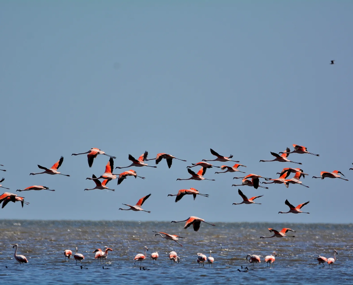

Una gran laguna salada y el hábitat preferido de los flamencos: así es el nuevo parque nacional
Se trata de Ansenuza, en la provincia de Córdoba; es el área número 41 con este tipo de protección en el país

Flamencos en la laguna de Mar Chiquita o Mar de Ansenuza, al noreste de Córdoba
Durante esta jornada, el Senado no solo convirtió en ley la creación del Parque Nacional Ansenuza, sino también la ampliación del Parque Nacional Predelta –ubicado en Entre Ríos–.
Lun 30 Mayo 2022 13:42pm
Apartir de hoy, la Argentina cuenta con una nueva área protegida. El Senado convirtió en ley por unanimidad (60 votos) la creación del Parque Nacional Ansenuza, ubicado al noreste de la provincia de Córdoba, que protege una superficie de 661.416 hectáreas en un humedal clave para la biodiversidad global y con particularidades que lo vuelven un sitio único. Así, la Argentina ya cuenta con 41 áreas con esa categoría de protección.
La laguna de Mar Chiquita es un extenso espejo de agua salada –el más grande de América del Sur y el quinto a nivel mundial– que tiene una superficie variable equivalente a casi 30 veces la de la ciudad de Buenos Aires. Esta característica tan peculiar le da la denominación de “Mar de Ansenuza” y con los Bañados del Río Dulce integran un inmenso humedal singular en su tipo.
El nuevo parque, además de su belleza paisajística, comprende un escenario de gran valor ecológico y cultural que incluye distintos ambientes:
El espejo de agua salina
Los cauces de los ríos
Las lagunas permanentes
Las playas barrosas
“La creación del Parque Nacional Ansenuza tiene relevancia mundial por tratarse de un sitio clave para la conservación de la biodiversidad a nivel global. Además de su importancia para el cuidado del ambiente, representa un gran atractivo para impulsar el turismo de naturaleza en la zona”
Un hábitat único para las especias autóctonas
Los amantes de la naturaleza y en especial de las aves, podrán pasar momentos inolvidables.
“El Parque Nacional Ansenuza alberga el 66% de todas las especies de aves migratorias y playeras registradas en la Argentina, a la vez que concentra casi el 36% de la avifauna del total del país y el 85% de las 447 especies de aves citadas para la provincia de Córdoba”
“Esta gran variedad de especies aéreas convierten al área protegida en uno de los lugares claves para la conservación de las aves del centro de las país y de las especias migratorias de Sudamérica. Cada año, la zona congrega hasta medio millón de especímenes que pasan por allí.”